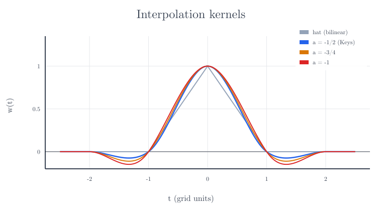
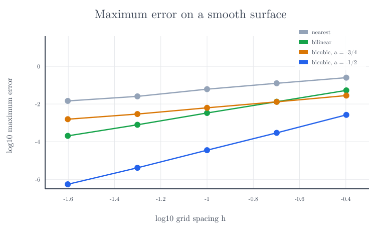
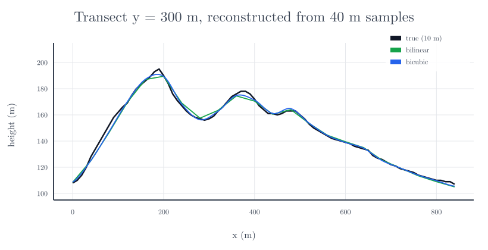

Bicubic Interpolation
Abstract
Bicubic interpolation reconstructs a gridded function by convolving its samples
with a piecewise-cubic kernel. We derive Keys' kernel from interpolation and
smoothness constraints, which leave one free parameter \(a\). A moment expansion
then shows that only \(a=-\tfrac12\) is third order. Every other value,
including the popular \(a=-\tfrac34\), leaves a bias
\(-(2a+1)hf'\,t(1-t)(1-2t)\) and is only first order. Measured convergence on a
smooth surface confirms orders 1, 2, 1 and 3 for nearest, bilinear,
\(a=-\tfrac34\) and \(a=-\tfrac12\), and the predicted bias matches the
\(a=-\tfrac34\) error to 1%. On real terrain, reconstructing the Maunga Whau
volcano (dm::datasets::volcano()) from coarse samples, bicubic beats bilinear
by 8 to 28% in RMS error. The gain is far smaller than on the smooth surface,
because the terrain is rough at the sample scale. The price is overshoot: 3.5%
of bicubic values leave the range of their cell's corners, by up to 2.1 m.
Interpolation as convolution
A function sampled on a grid of spacing \(h\) is known only at the nodes \(x_k=kh\). Many reconstruction rules have the form
a convolution of the samples with a kernel \(w\). Nearest-neighbour interpolation uses the box \(w(t)=1\) for \(|t|<\tfrac12\), and linear interpolation uses the hat \(w(t)=\max(0,1-|t|)\). In two dimensions a kernel is applied along each axis, so the weight of node \((i,j)\) is \(w(t_x-i)\,w(t_y-j)\). The hat then gives bilinear interpolation, which blends the four corners of the cell containing the query. Bicubic interpolation uses a piecewise-cubic kernel of width 4, so it blends the \(4\times4\) block around the cell.
Deriving the cubic kernel
Keys (1981) asked for a symmetric kernel that is a cubic on \(0\le|t|\le1\) and another on \(1\le|t|\le2\), and zero beyond:
That is eight coefficients. The constraints are:
- *Interpolation:* \(w(0)=1\) and \(w(1)=w(2)=0\), so the interpolant passes through the samples. This gives \(D=1\), \(A+B+C+D=0\) and \(8E+4F+2G+H=0\), and continuity at 1 gives \(E+F+G+H=0\).
- *Smoothness:* \(w'\) is continuous at 0, 1 and 2, so the interpolant is \(C^1\). Symmetry makes this \(C=0\) at 0, \(3A+2B=3E+2F+G\) at 1, and \(12E+4F+G=0\) at 2.
These are seven linear equations in eight unknowns. Setting \(E=a\) and solving gives the one-parameter family
where \(a=w_a'(1)\) is the slope at 1. It is negative for the useful choices, so the kernel dips below zero on \(1<|t|<2\), which sharpens edges.
Choosing a: moment conditions
Put the query at \(x=(j+t)h\) with \(0\le t<1\), so the four nodes used are at offsets \(m=-1,0,1,2\). Taylor-expand each sample about \(x\): \(f(x_{j+m})=f+(m-t)hf'+\tfrac12(m-t)^2h^2f''+O(h^3)\). Then
The error is \(O(h^p)\) when the first \(p\) moments vanish. Expanding the four weights as polynomials in \(t\) (a short exercise; the library tests confirm it to \(10^{-14}\)):
- \(\sum_m w_a(t-m)=1\) for every \(a\), so constants are reproduced.
- \(\sum_m (m-t)\,w_a(t-m)=-(2a+1)\,t(1-t)(1-2t)\). This vanishes for every \(t\) only when \(a=-\tfrac12\).
- With \(a=-\tfrac12\), \(\sum_m (m-t)^2w_a(t-m)=0\) as well.
So \(a=-\tfrac12\) reproduces quadratics, and the error is \(O(h^3)\). *Any other \(a\) is only first order.* The leading error is a bias \(-(2a+1)\,h\,f'\,t(1-t)(1-2t)\). It shifts the interpolant along the gradient by up to \(\max_t t(1-t)(1-2t)=1/(6\sqrt3)\approx0.096\) of \(|2a+1|\,h\) per axis, at \(t=\tfrac12\pm\tfrac1{2\sqrt3}\). That includes the popular \(a=-\tfrac34\), which some image libraries use because it looks sharper. In two dimensions the separable kernel has the same moments along each axis, so the same conclusions hold, and bicubic with \(a=-\tfrac12\) is exact for every polynomial of degree at most 2 in each variable away from the border.
Two more facts follow from the construction. Bilinear interpolation is second
order, because the hat kernel reproduces linear functions but not quadratics.
Nearest neighbour is first order. Near the grid edge,
algorithms::bicubic_interpolate replaces missing nodes by the edge value. That
breaks the first-moment condition, so accuracy drops to first order in a band
one cell wide.
#include <dm/dm.hpp>
namespace alg = dm::algorithms;
int main() {
std::filesystem::create_directories("build");
std::vector<double> t, hat, w05, w075, w1, bias05, bias075, bias1;
for (int k = -250; k <= 250; ++k) {
const double s = k / 100.0;
t.push_back(s);
hat.push_back(std::max(0.0, 1 - std::abs(s)));
w05.push_back(alg::cubic_convolution_kernel(s, -0.5));
w075.push_back(alg::cubic_convolution_kernel(s, -0.75));
w1.push_back(alg::cubic_convolution_kernel(s, -1.0));
}
std::print("| \\(a\\) | \\(\\min w_a\\) | \\(\\sum_m w_a(t-m)-1\\) | \\(\\sum_m (m-t)w_a(t-m)\\) at \\(t=0.2113\\) | " "\\(\\sum_m (m-t)^2w_a(t-m)\\) at \\(t=0.5\\) |\n| ---: | ---: | ---: | ---: | ---: |\n");
for (double a : {-0.5, -0.75, -1.0}) {
double lowest = 0;
for (double s : t)
lowest = std::min(lowest, alg::cubic_convolution_kernel(s, a));
double worst0 = 0;
for (double s = 0; s < 1; s += 0.001) {
double m0 = 0;
for (int m = -1; m <= 2; ++m)
m0 += alg::cubic_convolution_kernel(s - m, a);
worst0 = std::max(worst0, std::abs(m0 - 1));
}
const auto moment = [&](double s, int p) {
double sum = 0;
for (int m = -1; m <= 2; ++m)
sum +=
std::pow(m - s, p) * alg::cubic_convolution_kernel(s - m, a);
return sum;
};
std::print("| {} | {:.4f} | {:.0e} | {:+.4f} | {:+.4f} |\n", a, lowest,
worst0, moment(0.5 - 0.5 / std::sqrt(3.0), 1), moment(0.5, 2));
}
dm::graphics::RPlot::create().lines(t, hat, "hat (bilinear)",
dm::RGB{148, 163, 184}, 2.0).lines(
t, w05, "a = -1/2 (Keys)", dm::RGB{37, 99, 235}, 2.5).lines(
t, w075, "a = -3/4", dm::RGB{217, 119, 6}, 2.0).lines(
t, w1, "a = -1", dm::RGB{220, 38, 38}, 2.0).abline_h(
0, dm::RGB{17, 24, 39}, 0.8).y_limits(-0.2, 1.35).title(
"Interpolation kernels").x_label("t (grid units)").y_label("w(t)").size(
760, 420).save_svg("build/bicubic_kernels.svg");
}| \(a\) | \(\min w_a\) | \(\sum_m w_a(t-m)-1\) | \(\sum_m (m-t)w_a(t-m)\) at \(t=0.2113\) | \(\sum_m (m-t)^2w_a(t-m)\) at \(t=0.5\) |
|---|---|---|---|---|
| -0.5 | -0.0741 | 1e-15 | +0.0000 | +0.0000 |
| -0.75 | -0.1111 | 2e-15 | +0.0481 | -0.1250 |
| -1 | -0.1481 | 2e-15 | +0.0962 | -0.2500 |

All three cubic kernels interpolate (\(w=1\) at 0 and 0 at the other integers) and sum to one at every \(t\) to rounding error. The difference is in the moments. The first moment vanishes only for \(a=-\tfrac12\). For \(a=-\tfrac34\) it reaches \(0.048=\tfrac12\cdot\tfrac1{6\sqrt3}\) at \(t=0.2113\), and for \(a=-1\) twice that, exactly as \(-(2a+1)t(1-t)(1-2t)\) predicts. The second moment also vanishes for \(a=-\tfrac12\) only. The negative lobe has minimum \(4a/27\) at \(|t|=4/3\): \(-0.074\) for Keys' kernel and twice that for \(a=-1\). Deeper lobes give a sharper look, but also more overshoot.
Measured convergence orders
We check the derivation on a smooth surface, \(f(x,y)=\sin x\cos 1.3y\), sampled with spacing \(h\) from 0.4 down to 0.025 on \([-1,3]^2\). The error is measured on a fine set of points in \([0,2]^2\), well away from the border. For \(a=-\tfrac34\) we also evaluate the predicted leading error \(-(2a+1)h\,[\tau(t_x)f_x+\tau(t_y)f_y]\) with \(\tau(t)=t(1-t)(1-2t)\) at every evaluation point and take its maximum.
#include <dm/dm.hpp>
namespace alg = dm::algorithms;
int main() {
std::filesystem::create_directories("build");
const auto f = [](double x, double y) {
return std::sin(x) * std::cos(1.3 * y);
};
std::vector<double> eval_x, eval_y;
for (int i = 0; i <= 120; ++i)
eval_x.push_back(2.0 * i / 120 + 0.0013), eval_y.push_back(
2.0 * i / 120 + 0.0029);
struct Rule {
std::string name;
alg::GridInterpolation method;
double a;
std::vector<double> log_err;
};
std::vector<Rule> rules = {{"nearest", alg::GridInterpolation::Nearest, 0,
{}},
{"bilinear", alg::GridInterpolation::Bilinear, 0,
{}},
{"bicubic, a = -3/4",
alg::GridInterpolation::Bicubic, -0.75, {}},
{"bicubic, a = -1/2",
alg::GridInterpolation::Bicubic, -0.5, {}}};
std::vector<double> log_h;
std::print("| \\(h\\) | nearest | bilinear | bicubic \\(a=-3/4\\) | predicted bias \\(a=-3/4\\) | bicubic \\(a=-1/2\\) |\n" "| ---: | ---: | ---: | ---: | ---: | ---: |\n");
for (double h : {0.4, 0.2, 0.1, 0.05, 0.025}) {
std::vector<double> xs, z;
for (int k = 0; -1 + k * h <= 3 + 1e-9; ++k) xs.push_back(-1 + k * h);
for (double x : xs)
for (double y : xs) z.push_back(f(x, y));
log_h.push_back(std::log10(h));
std::vector<double> errs;
for (auto &rule : rules) {
const auto g =
alg::resample_grid(xs, xs, z, eval_x, eval_y, rule.method,
rule.a);
double err = 0;
for (std::size_t i = 0; i < eval_x.size(); ++i)
for (std::size_t j = 0; j < eval_y.size(); ++j)
err =
std::max(err,
std::abs(g[i * eval_y.size() + j] - f(
eval_x[i], eval_y[j])));
rule.log_err.push_back(std::log10(err));
errs.push_back(err);
}
const auto tau = [&](double v) {
const double t = (v + 1) / h - std::floor((v + 1) / h + 1e-12);
return t * (1 - t) * (1 - 2 * t);
};
double predicted = 0;
for (double x : eval_x)
for (double y : eval_y)
predicted =
std::max(predicted,
std::abs(0.5 * h * (tau(x) * std::cos(x) * std::cos(1.3 * y) -
tau(y) * 1.3 * std::sin(
x) * std::sin(1.3 * y))));
std::print("| {} | {:.2e} | {:.2e} | {:.2e} | {:.2e} | {:.2e} |\n", h,
errs[0], errs[1], errs[2], predicted, errs[3]);
}
std::print("| **slope, last two \\(h\\)** |");
for (std::size_t r = 0; r < rules.size(); ++r) {
const auto &e = rules[r].log_err;
std::print(" **{:.2f}** |{}",
(e[e.size() - 2] - e.back()) / std::log10(2.0),
r == 2 ? " |" : "");
}
std::print("\n");
auto plot = dm::graphics::RPlot::create();
const std::vector<dm::RGB> colors = {{148, 163, 184}, {22, 163, 74},
{217, 119, 6}, {37, 99, 235}};
std::vector<std::string> names;
for (std::size_t r = 0; r < rules.size(); ++r) {
plot.lines(log_h, rules[r].log_err, "", colors[r], 2.5).points(
log_h, rules[r].log_err, "", colors[r], 6.0);
names.push_back(rules[r].name);
}
plot.legend(names, colors).x_limits(-1.7, -0.3).y_limits(-6.5, 1.6).title(
"Maximum error on a smooth surface").x_label("log10 grid spacing h").y_label("log10 maximum error").size(760, 460).save_svg("build/bicubic_orders.svg");
}| \(h\) | nearest | bilinear | bicubic \(a=-3/4\) | predicted bias \(a=-3/4\) | bicubic \(a=-1/2\) |
|---|---|---|---|---|---|
| 0.4 | 2.50e-01 | 5.28e-02 | 2.81e-02 | 2.47e-02 | 2.65e-03 |
| 0.2 | 1.26e-01 | 1.32e-02 | 1.30e-02 | 1.24e-02 | 2.95e-04 |
| 0.1 | 6.12e-02 | 3.34e-03 | 6.29e-03 | 6.23e-03 | 3.54e-05 |
| 0.05 | 2.54e-02 | 7.90e-04 | 2.94e-03 | 2.91e-03 | 4.12e-06 |
| 0.025 | 1.46e-02 | 2.04e-04 | 1.56e-03 | 1.56e-03 | 5.50e-07 |
| *slope, last two \(h\)* | *0.80* | *1.95* | *0.91* | *2.91* |

The slopes over the last halving are 0.80, 1.95, 0.91 and 2.91, matching the predicted orders 1, 2, 1 and 3. (Nearest neighbour's error jumps about with the sample positions, so its slope is noisier.) The predicted first-order bias for \(a=-\tfrac34\) agrees with its measured error to within 1% for \(h\le0.1\). The bias is the whole story for that kernel. At coarse spacing \(a=-\tfrac34\) still beats bilinear, because the bias constant \(\tfrac12\cdot0.096\,h\,|\nabla f|\) is small. But bilinear overtakes it at \(h=0.2\), and at \(h=0.025\) Keys' choice is 2,800 times more accurate than \(a=-\tfrac34\).
Reconstructing a volcano
dm::datasets::volcano() holds the heights of Maunga Whau, a volcanic cone in
Auckland, on an \(87\times61\) grid with 10 m spacing. To test interpolation on
real terrain, we keep only every \(k\)-th row and column of the grid. That is
what a survey at spacing \(10k\) m would record. We then reconstruct the full 10
m grid from the coarse samples with each rule and compare with the withheld
heights. Points beyond the last coarse row or column are excluded, so nothing is
extrapolated.
#include <dm/dm.hpp>
namespace alg = dm::algorithms;
int main() {
std::filesystem::create_directories("build");
const auto volcano = dm::datasets::volcano();
const auto grid = alg::terrain_from_frame(volcano, "x", "y", "elevation");
const std::size_t nx = grid.rows, ny = grid.cols;
std::vector<double> xs, ys;
for (std::size_t i = 0; i < nx; ++i) xs.push_back(grid.cell_size * i);
for (std::size_t j = 0; j < ny; ++j) ys.push_back(grid.cell_size * j);
const auto &height =
grid.elevation; // height[i * ny + j] at (xs[i], ys[j])
struct Rule { std::string name; alg::GridInterpolation method; double a; };
const std::vector<Rule> rules = {{"nearest",
alg::GridInterpolation::Nearest, 0},
{"bilinear",
alg::GridInterpolation::Bilinear, 0},
{"bicubic \\(a=-3/4\\)",
alg::GridInterpolation::Bicubic, -0.75},
{"bicubic \\(a=-1/2\\)",
alg::GridInterpolation::Bicubic, -0.5}};
std::print("RMS error (m) of the reconstructed 10 m grid, over the points the coarse grid covers; maximum " "absolute error in brackets.\n\n| keep every | coarse grid | points scored |");
for (const auto &r : rules) std::print(" {} |", r.name);
std::print("\n| ---: | ---: | ---: | ---: | ---: | ---: | ---: |\n");
std::vector<std::vector<double>> keep_bilinear, keep_bicubic, keep_truth;
std::vector<double> keep_xs, keep_ys, coarse_xs4, coarse_ys4;
for (std::size_t k : {2, 3, 4, 6}) {
std::vector<double> cx, cy, cz;
for (std::size_t i = 0; i < nx; i += k) cx.push_back(xs[i]);
for (std::size_t j = 0; j < ny; j += k) cy.push_back(ys[j]);
for (std::size_t i = 0; i < nx; i += k)
for (std::size_t j = 0; j < ny; j += k)
cz.push_back(height[i * ny + j]);
std::vector<double> fx(xs.begin(),
xs.begin() + static_cast<long>(
(cx.size() - 1) * k + 1));
std::vector<double> fy(ys.begin(),
ys.begin() + static_cast<long>(
(cy.size() - 1) * k + 1));
std::print("| {} | {} × {} | {} |", k, cx.size(), cy.size(),
fx.size() * fy.size());
for (const auto &r : rules) {
const auto g =
alg::resample_grid(cx, cy, cz, fx, fy, r.method, r.a);
double sq = 0, worst = 0;
for (std::size_t i = 0; i < fx.size(); ++i)
for (std::size_t j = 0; j < fy.size(); ++j) {
const double e = g[i * fy.size() + j] - height[i * ny + j];
sq += e * e;
worst = std::max(worst, std::abs(e));
}
std::print(" {:.2f} ({:.1f}) |", std::sqrt(sq / g.size()), worst);
if (k == 4 && r.method != alg::GridInterpolation::Nearest &&
r.a != -0.75) {
std::vector<std::vector<double>> err(
fx.size(), std::vector<double>(fy.size()));
for (std::size_t i = 0; i < fx.size(); ++i)
for (std::size_t j = 0; j < fy.size(); ++j)
err[i][j] =
g[i * fy.size() + j] - height[i * ny + j];
(r.method == alg::GridInterpolation::Bilinear
? keep_bilinear : keep_bicubic) = err;
keep_xs = fx, keep_ys = fy;
}
}
std::print("\n");
if (k == 4) {
keep_truth.assign(fx.size(), std::vector<double>(fy.size()));
for (std::size_t i = 0; i < fx.size(); ++i)
for (std::size_t j = 0; j < fy.size(); ++j)
keep_truth[i][j] = height[i * ny + j];
for (std::size_t i = 0; i < nx; i += k)
for (std::size_t j = 0; j < ny; j += k)
coarse_xs4.push_back(xs[i]), coarse_ys4.push_back(ys[j]);
}
}
std::vector<dm::RGB> diverging;
for (int c = 0; c <= 20; ++c) {
const double s = (c - 10) / 10.0;
const auto mix = [&](int lo, int hi) {
return static_cast<std::uint8_t>(255 + (s < 0 ? -s : s) * (
(s < 0 ? lo : hi) - 255));
};
diverging.push_back(dm::RGB{mix(37, 220), mix(99, 38), mix(235, 38)});
}
auto truth_plot =
dm::graphics::RPlot::create().image(keep_xs, keep_ys, keep_truth,
dm::graphics::terrain_colors(20)).points(coarse_xs4, coarse_ys4, "", dm::RGB{17, 24, 39}, 2.0).title("Heights (m); dots: 40 m samples").x_label("x (m)").y_label("y (m)");
auto bilinear_plot =
dm::graphics::RPlot::create().image(keep_xs, keep_ys, keep_bilinear,
diverging, -6, 6).title(
"Bilinear error (m), scale -6 to 6").x_label("x (m)").y_label("y (m)");
auto bicubic_plot =
dm::graphics::RPlot::create().image(keep_xs, keep_ys, keep_bicubic,
diverging, -6, 6).title(
"Bicubic (a = -1/2) error (m)").x_label("x (m)").y_label("y (m)");
dm::graphics::RLayout::create(1, 3).add(truth_plot).add(bilinear_plot).add(
bicubic_plot).size(1500, 420).save_svg("build/bicubic_volcano.svg");
}RMS error (m) of the reconstructed 10 m grid, over the points the coarse grid covers; maximum absolute error in brackets.
| keep every | coarse grid | points scored | nearest | bilinear | bicubic \(a=-3/4\) | bicubic \(a=-1/2\) |
|---|---|---|---|---|---|---|
| 2 | 44 × 31 | 5307 | 2.41 (13.0) | 0.60 (4.5) | 0.56 (4.5) | 0.55 (4.5) |
| 3 | 29 × 21 | 5185 | 2.75 (13.0) | 0.99 (5.4) | 0.85 (5.3) | 0.81 (4.8) |
| 4 | 22 × 16 | 5185 | 3.97 (22.0) | 1.33 (6.5) | 1.13 (5.3) | 1.05 (5.6) |
| 6 | 15 × 11 | 5185 | 5.63 (30.0) | 2.18 (10.5) | 1.64 (7.3) | 1.58 (7.6) |

Bicubic with \(a=-\tfrac12\) has the lowest RMS error at every coarsening. It improves on bilinear by 8% when every second line is kept, 18% at every third, 21% at every fourth and 28% at every sixth. \(a=-\tfrac34\) is close behind. At these spacings the first-order bias is small next to the terrain's roughness. Nearest neighbour is 2.6 to 4.4 times worse than either, with errors up to 30 m.
The gains are modest compared with the smooth surface, where bicubic was hundreds of times better. The convergence rates explain why. From every third to every sixth line the spacing doubles, but the RMS error grows only 2.2 times for bilinear and 2.0 for bicubic, not the 4 and 8 their orders promise. Order of accuracy is an asymptotic statement about smooth functions. The volcano has features (crater rim, gullies, the thin diagonal line visible in the north-east of both error maps) about as narrow as the sample spacing. No rule can recover them from samples that miss them, so all rules are limited by the data. The error maps show the same structure for both methods, with bicubic lighter in the smooth parts of the cone's flanks.
A transect, and overshoot
The negative lobes of the cubic kernel let the interpolant leave the range of the nearby samples. Bilinear interpolation never does that: its weights are non-negative, so every value lies between the four corner heights. We count how often bicubic values fall outside the range of their \(2\times2\) coarse cell, and draw one transect through the crater.
#include <dm/dm.hpp>
namespace alg = dm::algorithms;
int main() {
std::filesystem::create_directories("build");
const auto volcano = dm::datasets::volcano();
const auto grid = alg::terrain_from_frame(volcano, "x", "y", "elevation");
const std::size_t nx = grid.rows, ny = grid.cols, k = 4;
std::vector<double> xs, ys, cx, cy, cz;
for (std::size_t i = 0; i < nx; ++i) xs.push_back(grid.cell_size * i);
for (std::size_t j = 0; j < ny; ++j) ys.push_back(grid.cell_size * j);
for (std::size_t i = 0; i < nx; i += k) cx.push_back(xs[i]);
for (std::size_t j = 0; j < ny; j += k) cy.push_back(ys[j]);
for (std::size_t i = 0; i < nx; i += k)
for (std::size_t j = 0; j < ny; j += k)
cz.push_back(grid.elevation[i * ny + j]);
const std::size_t cny = cy.size();
// Overshoot: values outside the range of the four coarse corners of their cell.
std::print("| rule | points outside their cell's corner range | largest excursion (m) |\n| :--- | ---: | ---: |\n");
std::vector<double> fx, fy;
for (double x = 0; x <= cx.back(); x += 2.5) fx.push_back(x);
for (double y = 0; y <= cy.back(); y += 2.5) fy.push_back(y);
for (const auto & [name, method, a] : {
std::tuple{"bilinear", alg::GridInterpolation::Bilinear, 0.0}, std::tuple{"bicubic \\(a=-3/4\\)", alg::GridInterpolation::Bicubic, -0.75}, std::tuple{"bicubic \\(a=-1/2\\)", alg::GridInterpolation::Bicubic, -0.5}
}) {
const auto g = alg::resample_grid(cx, cy, cz, fx, fy, method, a);
std::size_t outside = 0;
double excursion = 0;
for (std::size_t i = 0; i < fx.size(); ++i)
for (std::size_t j = 0; j < fy.size(); ++j) {
const std::size_t ci =
std::min(static_cast<std::size_t>(fx[i] / (10.0 * k)),
cx.size() - 2);
const std::size_t cj =
std::min(static_cast<std::size_t>(fy[j] / (10.0 * k)), cny - 2);
const double c[4] = {cz[ci * cny + cj], cz[(ci + 1) * cny + cj],
cz[ci * cny + cj + 1], cz[(ci + 1) * cny + cj + 1]};
const double lo =
*std::min_element(c, c + 4), hi = *std::max_element(c, c + 4);
const double v = g[i * fy.size() + j];
const double out = std::max(lo - v, v - hi);
if (out > 1e-9) ++outside, excursion = std::max(excursion, out);
}
std::print("| {} | {:.1f}% | {:.2f} |\n", name,
100.0 * outside / g.size(), excursion);
}
// Transect along y = 300 m (a coarse grid line is at 280 and 320), across the summit and crater.
const double y0 = 300;
std::vector<double> tx, truth, bil, bic, sx, sy;
for (std::size_t i = 0; i < nx && xs[i] <= cx.back(); ++i) {
tx.push_back(xs[i]);
truth.push_back(grid.elevation[i * ny + 30]);
}
std::vector<double> dense;
for (double x = 0; x <= cx.back(); x += 2.0) dense.push_back(x);
bil =
alg::resample_grid(cx, cy, cz, dense, {y0},
alg::GridInterpolation::Bilinear);
bic =
alg::resample_grid(cx, cy, cz, dense, {y0},
alg::GridInterpolation::Bicubic, -0.5);
double worst_bil = 0, worst_bic = 0;
for (std::size_t i = 0; i < tx.size(); ++i) {
worst_bil = std::max(worst_bil, std::abs(bil[i * 5] - truth[i]));
worst_bic = std::max(worst_bic, std::abs(bic[i * 5] - truth[i]));
}
std::print("\nAlong y = {} m (between the coarse lines y = 280 and 320 m): largest error {:.1f} m bilinear, " "{:.1f} m bicubic; summit on this line {:.0f} m at x = {:.0f} m.\n",
y0, worst_bil, worst_bic, std::ranges::max(truth),
tx[std::ranges::max_element(truth) - truth.begin()]);
dm::graphics::RPlot::create().lines(tx, truth, "true (10 m)",
dm::RGB{17, 24, 39}, 2.5).lines(
dense, bil, "bilinear", dm::RGB{22, 163, 74}, 1.8).lines(
dense, bic, "bicubic", dm::RGB{37, 99, 235}, 1.8).y_limits(95, 215).title("Transect y = 300 m, reconstructed from 40 m samples").x_label("x (m)").y_label("height (m)").size(820, 420).save_svg("build/bicubic_transect.svg");
}| rule | points outside their cell's corner range | largest excursion (m) |
|---|---|---|
| bilinear | 0.0% | 0.00 |
| bicubic \(a=-3/4\) | 4.6% | 3.70 |
| bicubic \(a=-1/2\) | 3.5% | 2.10 |
Along y = 300 m (between the coarse lines y = 280 and 320 m): largest error 6.1 m bilinear, 5.0 m bicubic; summit on this line 195 m at x = 190 m.

Bilinear interpolation never leaves the range of the four corners, so it cannot overshoot, but it cannot reach a peak between samples either. Bicubic values fall outside their cell's corner range at 3.5% of points, by at most 2.1 m. For \(a=-\tfrac34\) it is 4.6% and 3.7 m, as the deeper lobes predict. Overshoot is not necessarily error: on the transect, bicubic's curvature lets it climb closer to the 195 m summit and follow the crater floor. Its largest error on the line is 5.0 m against 6.1 m for bilinear. Both miss the summit spike, which is narrower than the 40 m samples.
Summary
- Interpolation and \(C^1\) smoothness constraints on a width-4 piecewise-cubic kernel leave a one-parameter family \(w_a\). The moment conditions single out \(a=-\tfrac12\) as the only member that reproduces linear (and quadratic) functions. It is third order, and every other \(a\) is first order with bias \(-(2a+1)hf'\,t(1-t)(1-2t)\).
- Measured orders on a smooth surface match the theory (0.8, 1.95, 0.91, 2.91), and the predicted bias for \(a=-\tfrac34\) matches its error to 1%.
- On the volcano, bicubic beats bilinear by 8 to 28% in RMS error, with the gain growing as the samples get coarser. Every rule's error grows only about linearly with spacing, because the terrain has detail at the sample scale.
- The kernel's negative lobes cause overshoot (3.5% of points, up to 2.1 m for \(a=-\tfrac12\)) that bilinear interpolation cannot produce.
algorithms::cubic_convolution_kernel,bicubic_interpolate(with optional \(a\)) andresample_grid(nearest, bilinear or bicubic) are in<datamunge/algorithms/bicubic_interpolation.hpp>.terrain_from_frameturns the long-format volcano table into a grid.
References
- Keys, R. G. (1981). Cubic convolution interpolation for digital image processing. IEEE Transactions on Acoustics, Speech, and Signal Processing 29, 1153–1160.
- Mitchell, D. P. and Netravali, A. N. (1988). Reconstruction filters in computer graphics. Computer Graphics (SIGGRAPH '88) 22, 221–228.
- Meijering, E. (2002). A chronology of interpolation: from ancient astronomy to modern signal and image processing. Proceedings of the IEEE 90, 319–342.
- R Core Team.
datasets::volcano: topographic information on Auckland's Maunga Whau volcano.